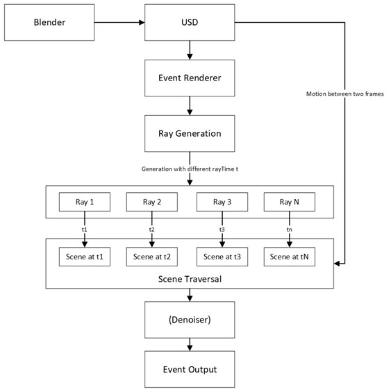

Modern event-based camera simulators use video frames as input and sample visual signals either synchronously or adaptively to generate events. These methods necessitate inputs with extremely high frame rates to accurately simulate events corresponding to rapid activities. An illustrative example of such activities includes eye movements, such as saccades. It takes hundreds of hours to render millions of video frames for a short synthetic eye video clip. Yet, most of the visual signals will be lost once the events have been generated as the event sensors only capture the changes in brightness for each pixel.
To address these challenges, I propose the development of a synthetic event-based camera renderer. This system is designed to emulate the functionality of real event-based cameras, by enabling the rendering of events directly from a 3D scene at interactive frame rates asynchronously with high temporal resolution. The primary aim of this approach is to capture the rapid dynamics of activities such as eye movements more accurately, while also reducing computational costs.
Unlike conventional event simulators, this system will utilize a virtual camera, where each ray corresponds to a pixel capable of independently generating events with unique timestamps. This allows for rendering scenes at a substantially higher temporal resolution efficiently, without the need to render thousands of frames per second. Such an approach promises enhanced accuracy and efficiency in simulating dynamic events within 3D environments.
In the proposed system, as illustrated in Figure 1, 3D scenes created with software like Blender are utilized, leveraging existing projects for efficiency. These scenes are exported in Universal Scene Description (USD) format for external rendering. The renderer employs OptiX to generate rays, each assigned a distinct ray time within the inter-frame interval, allowing sampling from the scene at varied times. Incorporating motion information, the system interpolates both transformation and deformation animations for each ray. Subsequently, a local or global denoiser refines the output before finalizing the outputs.
The project utilizes Universal Scene Description (USD) files to ensure compatibility with existing 3D projects, especially those developed in Blender. This approach is particularly important for simulating synthetic eye movements with the RITEyes rendering pipeline. Considering Blender's frequent updates and sparse documentation, integrating a renderer directly poses significant challenges. Therefore, leveraging Blender's external rendering feature, a recent addition, presents a more feasible solution. USD, being a standard embraced by major 3D software including Blender, 3dsMax, Maya, and Unreal Engine, facilitates this process. A renderer designed for USD files can function either as a Hydra render delegate within Blender or as an independent renderer. This versatility ensures broader compatibility with various 3D projects, streamlining integration with minimal effort.
Among the leading hardware-accelerated ray tracing technologies, OptiX, DirectX Raytracing (DXR), and Vulkan Ray Tracing stand out, all leveraging Nvidia’s RT cores. DXR and Vulkan RT offer similar functionalities across different APIs, with Vulkan RT extending support to both Windows and Linux operating systems. In applications requiring optimal real-time ray tracing performance, such as video games, Vulkan RT typically emerges as the preferred choice due to its efficiency and cross-platform capabilities. However, for applications demanding higher levels of flexibility, such as scientific simulations, data visualization, or photorealistic rendering, OptiX is more advantageous. It allows for the development of complex and custom ray tracing systems, providing a broader scope for specialized computational requirements.
In this project, the aim is to simulate event sensors, with each ray representing a pixel in an event-based camera. This unique approach focuses primarily on calculating brightness changes, allowing us to simplify certain shading steps that are typically more complex in traditional ray tracing. One of the key features of our system is its ability to render events with distinct timestamps within a single frame, significantly enhancing temporal resolution. This functionality capitalizes on the motion blur support provided by Nvidia OptiX, enabling it to accurately simulate the dynamic and nuanced behavior of event-based sensors. By leveraging OptiX's advanced capabilities, we can more effectively mimic the asynchronous nature of these sensors, capturing the subtle variations.
Prior to the event generation phase, where threads process the produced brightness buffer to generate events, it may be necessary to denoise this buffer, especially when employing the Monte Carlo method in path tracing. Typically, the Monte Carlo method requires hundreds of samples per pixel to achieve noise-free results, a demand that is impractical for real-time ray tracing applications. In this domain, several denoising methods have been developed, with notable options including the Weighted Local Regression (WLR) [2] and AI-based denoising facilitated by OptiX. However, given the specialized nature of this renderer, which operates on a high dynamic range (HDR) brightness buffer, the efficacy of these denoising techniques in our specific context is yet to be thoroughly evaluated through experimentations.
Integrating new technologies like USD render delegates and OptiX presents a set of unique challenges in this project. Fortunately, there are existing open-source path tracing renderers, such as Strelka [6], to refer to, which showcase the effective use of OptiX and USD in real time. Strelka’s implementation, particularly its framework as a real-time renderer for USD files, offers valuable insights that can inform the structural design of our system. Our approach, however, diverges in its application, focusing on leveraging OptiX’s built-in capabilities for simulating events with distinct timestamps — a feature originally developed for motion blur effects. This aspect of the project requires careful navigation of hardware functions and efficient memory management. Another challenge we anticipate is denoising. While denoising is a well-trodden area in ray tracing, selecting the most appropriate technique for our high dynamic range brightness buffer and comparing existing methods will be crucial to achieving optimal clarity in the simulated events.